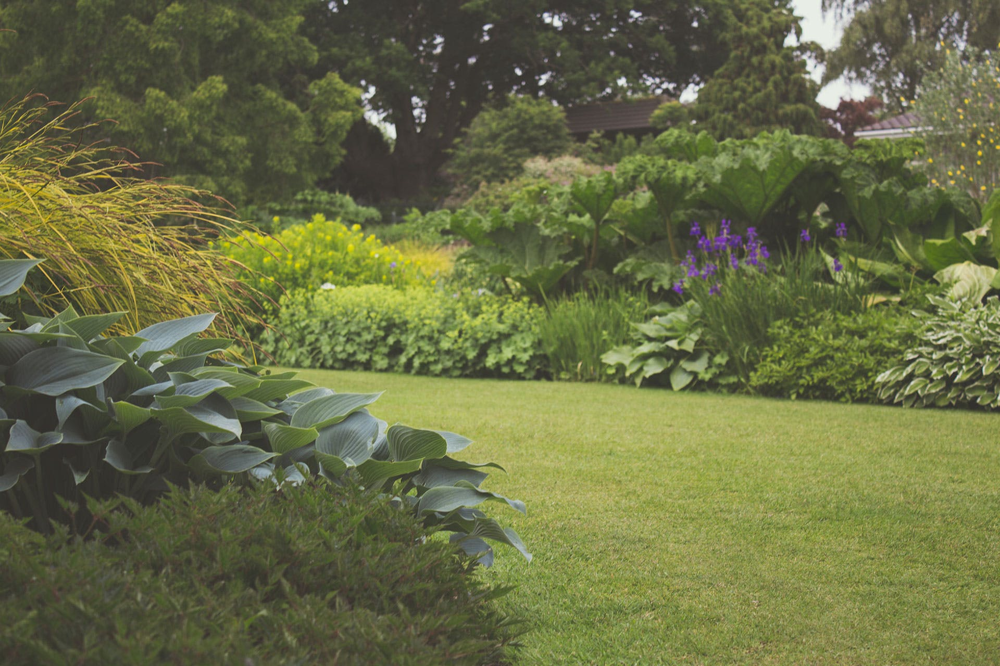
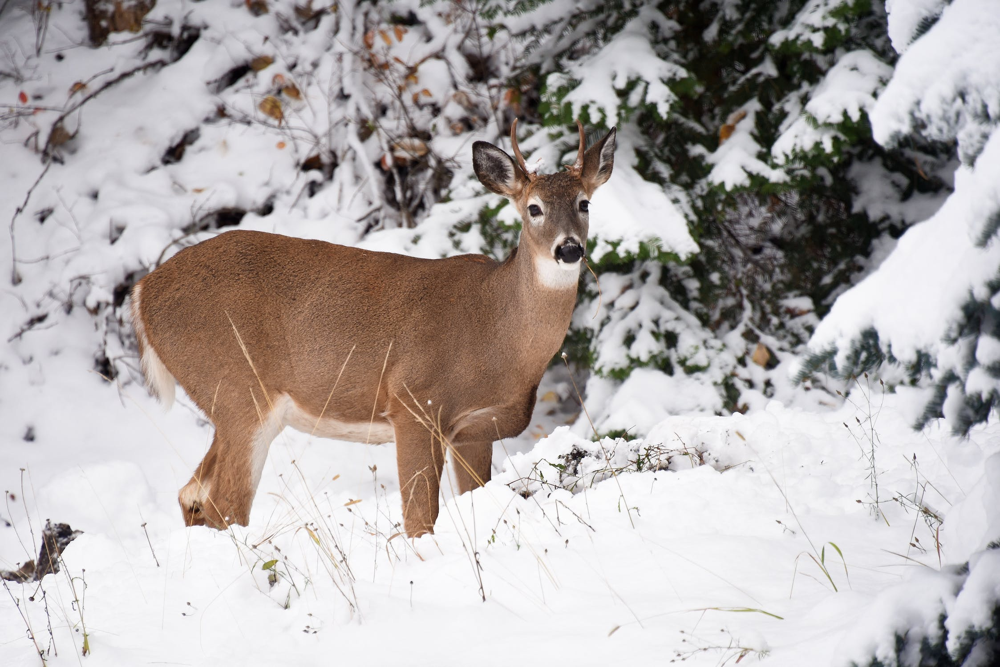
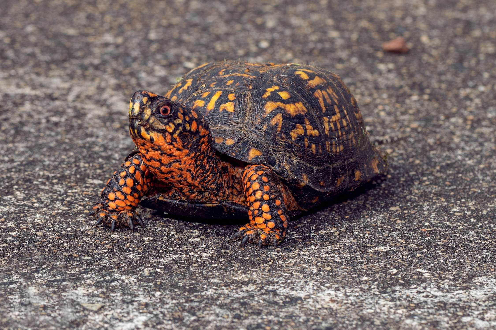
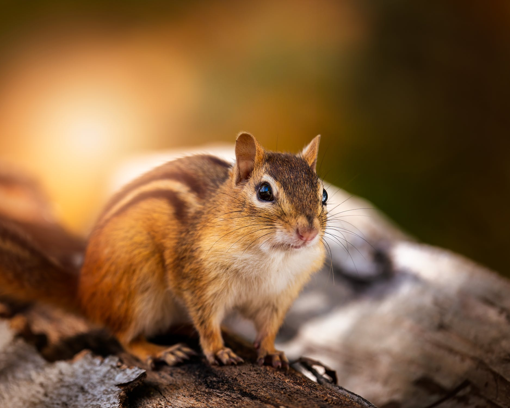
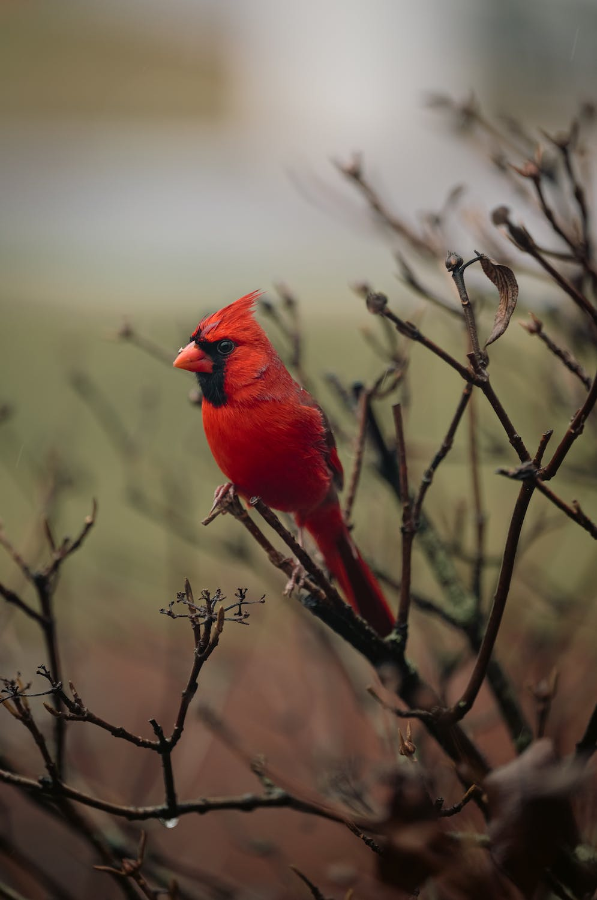

I would like to introduce common backyard species in Kentucky. Please sign up for the newsletter below for more information.

Here are some common animals that you may see in your backyard!

One of the most common mammals is the whitetail deer! They are frequent visitors in Kentucky backyards.
Image By:
Deloris Augustine

The Eastern box turtle will frequent backyards that are located at a forest's edge. They are omnivores and can eat insects, grasses, and fruit.
Image by:
Alex Kad

The Eastern Chipmunk is a common rodent with reddish-brown fur and light brown stripes on its back. They live in deciduous wooded areas and urban parks. With a preference for rocky areas, brush, or log piles.
Image By:
Skyler Ewing

The Northern Cardinal are common visitors to backyard feeders. Males are a bright red with a black mask. Females are fawn colored with mostly grayish-brown tones. Both sport raised crests and bright coral-colored beaks.